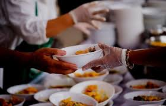
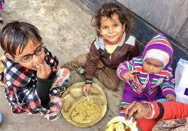

SharePlate connects food donors with NGOs to reduce food waste and feed the needy in real time.
Start Donating↓ Scroll to explore
Millions sleep hungry while tons of food is wasted daily. SharePlate bridges this gap.


Your small food donation can bring big smiles. SharePlate ensures that excess food reaches people who truly need it, creating real impact at the grassroots level.
We connect donors and NGOs so surplus food reaches people instead of landfills.
Add surplus food details.
NGOs view and collect food.
Food reaches needy people.
Minimize food wastage across cities by connecting donors to NGOs.
Help NGOs serve more people daily with timely food donations.
Bring communities, donors, and NGOs together for social good.